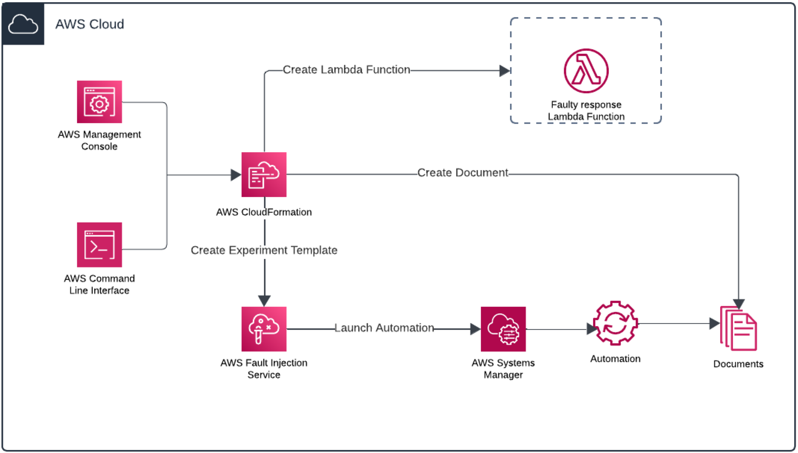
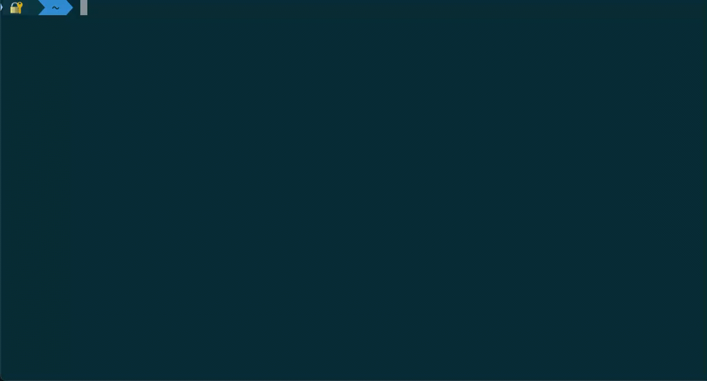

Blog 1 - AWS Fault Injection Service
Mô phỏng sự cố từng phần với AWS Fault Injection Service
Được viết bởi Ozgur Canibeyaz và Pablo Colazurdo | ngày 30 tháng 6 năm 2025 | trong AWS Fault Injection Service (FIS), AWS Resilience Hub (ARH), AWS Systems Manager, Management Tools, Resilience, Technical How-to | Permalink | Share
Một hệ thống phân tán hiện đại cần có khả năng chịu đựng được các gián đoạn bất ngờ để duy trì tính sẵn sàng, hiệu năng và ổn định. Chaos engineering giúp các nhóm phát hiện ra điểm yếu tiềm ẩn bằng cách cố ý tiêm các lỗi vào hệ thống và quan sát cách nó phục hồi. Trong khi kiểm thử truyền thống xác thực hành vi mong đợi, chaos engineering kiểm tra khả năng chịu lỗi của hệ thống khi có sự cố. AWS Fault Injection Service (AWS FIS) là một dịch vụ AWS được quản lý hoàn chỉnh, giúp các nhóm tiến hành các thí nghiệm tiêm lỗi cho các workload trên AWS. Nó hỗ trợ những kịch bản như kết thúc các Amazon EC2 instances, giới hạn lưu lượng yêu cầu Amazon API Gateway và gây độ trễ mạng. Nhờ đó bạn có thể xác minh tính chịu lỗi trong môi trường tương tự sản xuất. Mặc dù những khả năng này rất mạnh, nhiều dạng lỗi thực tế chỉ ảnh hưởng một phần lưu lượng.
Trong bài này, bạn sẽ học cách mô phỏng lỗi một phần. Một mode lỗi phổ biến nhưng ít được thử nghiệm — bằng cách kết hợp AWS FIS với định tuyến trọng số (weighted routing) trong Application Load Balancer (ALB) và một hàm AWS Lambda trả về phản hồi lỗi tùy chỉnh. Cách tiếp cận này cho phép bạn kiểm tra cách ứng dụng xử lý điều kiện suy giảm mà không thay đổi mã hoặc gián đoạn lưu lượng bình thường.
Tổng quan về sự cố từng phần
Giải pháp của chúng tôi kết hợp AWS FIS với định tuyến trọng số trên ALB để điều hướng một tỷ lệ cấu hình được của lưu lượng đến một hàm Lambda trả về lỗi giả lập. Cách tiếp cận này không yêu cầu thay đổi mã ứng dụng và tự động quay lại hoạt động bình thường sau khi thí nghiệm kết thúc.

Hình 1 minh họa cách giải pháp thay đổi Load Balancer để tiêm lỗi trong giai đoạn thực hiện thí nghiệm và tự động khôi phục sau đó.
Lợi ích chính
Giải pháp này mang lại những lợi ích chính cho các nhóm triển khai chaos engineering:
-
Mô phỏng lỗi có kiểm soát.
-
Không cần chỉnh sửa ứng dụng.
-
Thiết lập và hoàn tác tự động.
-
Tỷ lệ lỗi có thể cấu hình.
Hướng dẫn triển khai
Điều kiện tiên quyết
Trước khi bắt đầu, hãy đảm bảo bạn có:
-
Một tài khoản AWS với quyền triển khai AWS CloudFormation stack và quản lý các thí nghiệm AWS FIS.
-
Một ALB đã được cấu hình với nhóm đích (target group) chuyển hướng lưu lượng đến một microservice đang chạy.
-
ALB phải đã hoạt động và có thể truy cập công khai để thử nghiệm các lỗi giả lập.
-
AWS Command Line Interface(AWS CLI) hoặc quyền truy cập giao diện quản lý AWS.
Bước 1: Triển khai mẫu CloudFormation
Template CloudFormation sẽ thiết lập tất cả tài nguyên cần thiết, bao gồm:
-
Một hàm Lambda để mô phỏng phản hồi lỗi.
-
Một tài liệu tự động (automation document) của AWS Systems Manager (SSM).
-
Một role IAM cấp quyền để AWS FIS có thể gọi tài liệu tự động SSM.
-
Một mẫu thí nghiệm AWS FIS experiment template.
 Hình 2 minh họa góc nhìn tổng quan về các thành phần giải pháp và tương tác giữa chúng.
Thông số thử nghiệm có thể định cấu hình
Template CloudFormation yêu cầu ba tham số khi triển khai:
-
Tên của Application Load Balancer.
-
ARN của listener rule ALB cần thay đổi.
-
Thời lượng thử nghiệm tính bằng giây — thời gian mà lỗi một phần được giả lập.
Những cài đặt thí nghiệm khác, chẳng hạn như phần trăm lưu lượng chuyển hướng và mã phản hồi Lambda, được cấu hình trước trong định nghĩa thí nghiệm. Nếu bạn muốn tùy chỉnh các giá trị này, có hai lựa chọn:
Option 1: Sửa Template CloudFormation và triển khai lại
Bạn có thể chỉnh sửa trường documentParameters trong phần định nghĩa thí nghiệm của template để thay đổi:
- FailurePercentage (ví dụ: 10, 50, 100).
Để thay đổi mã HTTP phản hồi từ hàm Lambda (ví dụ từ 500 sang 404), sửa giá trị statusCode trực tiếp trong phần mã nội tuyến của template.
Sau khi chỉnh sửa, triển khai lại stack để áp dụng thay đổi.
Option 2: Tạo phiên bản mới của tài liệu SSM Automation
Nếu bạn không muốn triển khai lại toàn bộ stack:
-
Vào AWS Systems Manager → bảng điều khiển Documents.
-
Tìm tài liệu SSM được tạo bởi template.
-
Chọn Create new version và điều chỉnh giá trị mặc định như FailurePercentage.
-
Sử dụng phiên bản cập nhật trong một thí nghiệm AWS FIS mới (qua CLI hoặc console).
IAM Permissions:
Bạn cần quyền tạo role IAM và policy khi triển khai CloudFormation template. Khi triển khai qua AWS Console, bạn cần xác nhận rằng template tạo tài nguyên IAM. Nếu dùng AWS CLI, thêm flag --capabilities CAPABILITY_NAMED_IAM.
Tải về template: bạn có thể tải CloudFormation template here và lưu lại dưới tên fis_template.yaml trước khi triển khai qua AWS Console hoặc CLI.
aws cloudformation create-stack --stack-name alb-fis-experiment \
--template-body file://fis_template.yaml \
--parameters \
ParameterKey=LoadBalancerName,ParameterValue=LoadBalancerName \
ParameterKey=ListenerRuleArn,ParameterValue=RuleARN \
ParameterKey=TestDurationInSeconds,ParameterValue=60 \
--capabilities CAPABILITY_NAMED_IAM
LoadBalancerName và RuleARN tương ứng với tên Load Balancer và ARN đầy đủ của listener rule trước service mà bạn muốn giả lập lỗi. Giá trị 60 chỉ định thời gian thử nghiệm tính bằng giây.
Lưu ý: FISExperimentRole Policy IAM sử dụng “Resource”: “*" cho một số hành động để AWS FIS có thể thay đổi tài nguyên load balancer tạo động. Vì tên tài nguyên ARNs nhóm đích không được biết trước thời điểm triển khai, việc giới hạn quyền theo tài nguyên cụ thể thật sự không khả thi trong ngữ cảnh ví dụ này. Mặc dù cách làm này mang lại tính linh hoạt, AWS security best practices khuyến nghị nên giới hạn quyền tới các tài nguyên cụ thể nếu bạn biết rõ sẽ sử dụng tài nguyên nào. Nếu bạn biết chính xác các tài nguyên sẽ được sử dụng, hãy cân nhắc cập nhật chính sách để hạn chế quyền truy cập cho phù hợp.
Bước 2: Xác minh hàm Lambda
Sau khi triển khai, kiểm tra hàm Lambda trong AWS console để xác nhận nó trả về phản hồi lỗi như mong đợi. Hàm nên trả về dạng:
{
"statusCode": 503,
"body": "Service Unavailable - Simulated Error Response"
}
Bước 3: Bắt đầu thử nghiệm AWS FIS
-
Mở bảng điều khiển AWS Fault Injection Service.
-
Tìm template đã cấu hình sẵn trong Experiment Templates.
-
Chọn bắt đầu thí nghiệm (Start experiment).
-
Xác nhận và khởi chạy thử nghiệm.
 Hình 3 cho thấy console AWS FIS với template thí nghiệm tùy chỉnh được tạo bởi CloudFormation template.
Hình 3 cho thấy console AWS FIS với template thí nghiệm tùy chỉnh được tạo bởi CloudFormation template.
Khi bạn bắt đầu thí nghiệm, AWS FIS sẽ gọi đến AWS Systems Manager Automation Document đã tạo trong bước triển khai. Tài liệu này thực hiện các hành động sau:
-
Tạo một ALB target group mới trỏ tới hàm Lambda được cấu hình để trả về phản hồi lỗi giả lập.
-
Sửa đổi ALB listener rule để chia một phần lưu lượng đến nhóm đích mới, mô phỏng lỗi một phần.
-
Chờ trong thời gian đã định (có thể cấu hình qua CloudFormation template).
-
Quay lại ALB listener rule về trạng thái ban đầu và xóa nhóm đích tạm thời.
Toàn bộ vòng đời được tự động hóa — bạn không cần viết mã hay thực hiện cập nhật thủ công cho load balancer. Bạn chỉ việc bắt đầu thí nghiệm từ FIS console và quan sát cách dịch vụ của bạn phản ứng với kịch bản lỗi có kiểm soát.
Trong ảnh chụp màn hình sau, bạn sẽ thấy quy tắc ALB listener rule ban đầu chỉ có nhóm mục tiêu mặc định được cấu hình.

Hình 4 là ALB listener rule trước khi thí nghiệm bắt đầu, cho thấy một nhóm đích nhận 100% lưu lượng.
Sau khi thử nghiệm bắt đầu, AWS FIS sẽ sửa đổi quy tắc để phân chia lưu lượng — như được hiển thị trong ảnh chụp màn hình Sau.

Hình 5 là ALB listener rule sau khi thí nghiệm bắt đầu, cho thấy nhóm Lambda mới nhận 50% lưu lượng và phản hồi lỗi đã định.
Bước 4: Quan sát và phân tích kết quả
Bạn có thể xác minh thí nghiệm bằng cách làm mới DNS của ALB trên trình duyệt hoặc chạy vòng lặp curl:
while true; do curl \-s http://\<your-alb-dns-name\>; sleep 1; done
Hình 6 minh họa đầu ra CLI gửi yêu cầu liên tục đến URL ALB để thể hiện cách giải pháp tiêm lỗi trong quá trình thực nghiệm.
Bạn sẽ thấy đầu ra xen kẽ giữa:
-
Backend service is healthy (backend service)
-
Dịch vụ không khả dụng – Phản hồi lỗi mô phỏng (Lambda)
Bạn có thể theo dõi Amazon CloudWatch Logs để xem metrics hàm Lambda và Application behavior (cơ chế retry, failover,…).
Lưu ý: Sau khi bắt đầu thử nghiệm, có thể mất đến một phút trước khi nhóm đích mới gắn vào ALB và lưu lượng bắt đầu được phân luồng sang hàm Lambda. Trong khoảng thời gian ngắn này, tất cả yêu cầu vẫn có thể đạt đến service backend ban đầu.
Cơ chế khôi phục
Cơ chế rollback của thí nghiệm:
-
ALB Listener rule tự động được hoàn tác khi kết thúc thời gian thử nghiệm.
-
Nhóm đích tạm thời bị loại bỏ và xóa để tránh tồn đọng cấu hình.
-
Nếu thí nghiệm bị hủy bỏ, quy trình rollback vẫn trả hệ thống về trạng thái ban đầu.
Cân nhắc
Bài viết này cung cấp thông tin kỹ thuật và cấu hình ví dụ. Việc triển khai trong môi trường thực tế có thể yêu cầu xem xét thêm về bảo mật, tuân thủ và các yếu tố kỹ thuật. Luôn kiểm thử kỹ trong môi trường không phải sản xuất trước.
Dọn dẹp
Để tránh phát sinh chi phí về sau, hãy xóa các tài nguyên đã triển khai:
aws cloudformation delete-stack \--stack-name alb-fis-experiment
Kết thúc
Trong bài viết này, chúng tôi đã minh họa cách mở rộng khả năng của AWS FIS bằng cách mô phỏng lỗi một phần cho workload đứng sau ALB sử dụng Lambda. Giải pháp này cho phép các nhóm thử nghiệm khả năng chịu lỗi của ứng dụng trước các sự cố gián đoạn mà không gây ra toàn bộ outage. Bằng cách tận dụng AWS FIS, Lambda và quy tắc định tuyến ALB, bạn có thể tạo ra các kịch bản lỗi có kiểm soát và nâng cao độ bền hệ thống.
Để tìm hiểu thêm, hãy tham khảo các tài nguyên sau:
- AWS Fault Injection Service Documentation
- Amazon ALB Documentation
- Use Systems Manager SSM documents with AWS FIS
Get started with the CloudFormation template và chia sẻ trải nghiệm của bạn trong phần bình luận phía dưới.
TAGS: aws fault injection simulator, chaos engineering
|
Ozgur Canibeyaz Ozgur là Senior Technical Account Manager tại Amazon Web Services với 8 năm kinh nghiệm. Ozgur giúp khách hàng tối ưu hóa việc sử dụng AWS bằng cách giải quyết các thử thách kỹ thuật, khám phá cơ hội tiết kiệm chi phí, đạt được sự xuất sắc vận hành và xây dựng các dịch vụ đổi mới bằng sản phẩm AWS. |

|
Pablo Colazurdo Pablo là Principal Solutions Architect tại AWS nơi anh ấy thích giúp khách hàng khởi động các dự án thành công trên Cloud. Anh ấy có nhiều năm kinh nghiệm làm việc với các công nghệ đa dạng và luôn đam mê học hỏi điều mới. Pablo lớn lên ở Argentina nhưng giờ thích mưa ở Ireland trong lúc nghe nhạc, đọc sách hoặc chơi D&D với các con. |